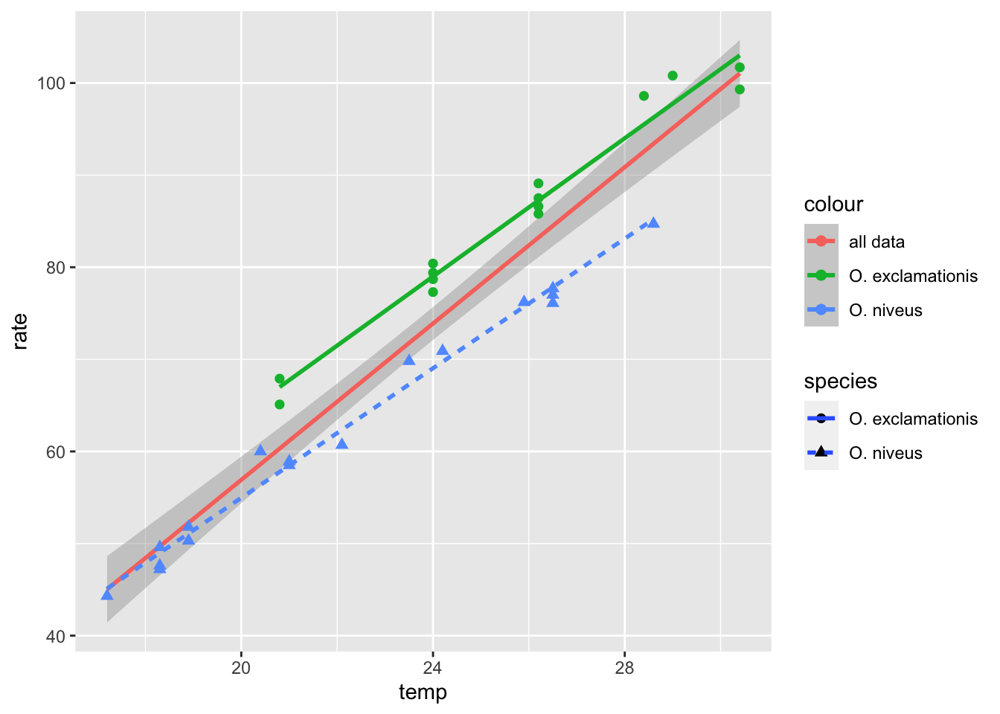
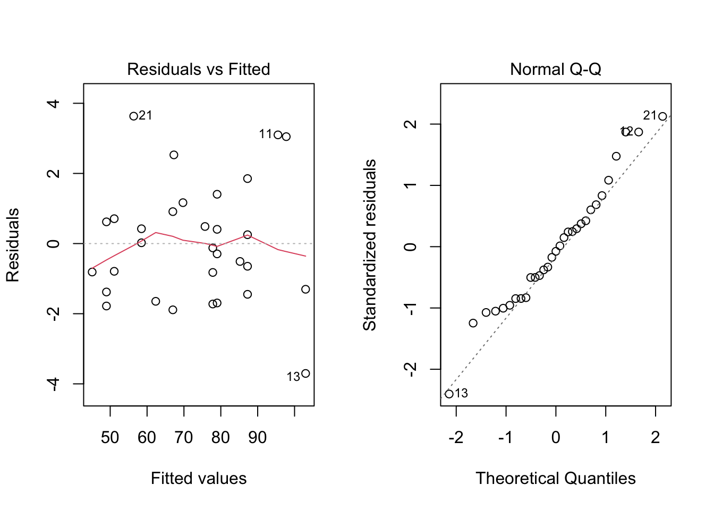

# A tibble: 31 × 3
species temp rate
<fct> <dbl> <dbl>
1 O. exclamationis 20.8 67.9
2 O. exclamationis 20.8 65.1
3 O. exclamationis 24 77.3
4 O. exclamationis 24 78.7
5 O. exclamationis 24 79.4
6 O. exclamationis 24 80.4
7 O. exclamationis 26.2 85.8
8 O. exclamationis 26.2 86.6
9 O. exclamationis 26.2 87.5
10 O. exclamationis 26.2 89.1
# … with 21 more rows
Task
Plot the temp on the x axis, the chirp rate on the y axis; use a separate colour for each species:
`geom_smooth()` using formula 'y ~ x'
`geom_smooth()` using formula 'y ~ x'

Inferential model results:
null hypothesis: temp has no effect on chirp rate = provisionally Reject because it is clear that temp increases with rate (“all data” slope is clear)
null hypothesis: there is no difference between species’ chirp rate = provisionally Reject because the slopes for each species are clearly separate
Models have the form:
y ~ x1 + x2 + (x1 * x2)
Where \(y\) is the outcome variable, \(x_n\) are each predictors, and an interaction is modeled by *.
Example of a real model:
interaction_fit <-lm(rate ~ (temp + species)^2, data = crickets)summary(interaction_fit)
Call:
lm(formula = rate ~ (temp + species)^2, data = crickets)
Residuals:
Min 1Q Median 3Q Max
-3.7031 -1.3417 -0.1235 0.8100 3.6330
Coefficients:
Estimate Std. Error t value Pr(>|t|)
(Intercept) -11.0408 4.1515 -2.659 0.013 *
temp 3.7514 0.1601 23.429 <2e-16 ***
speciesO. niveus -4.3484 4.9617 -0.876 0.389
temp:speciesO. niveus -0.2340 0.2009 -1.165 0.254
---
Signif. codes: 0 '***' 0.001 '**' 0.01 '*' 0.05 '.' 0.1 ' ' 1
Residual standard error: 1.775 on 27 degrees of freedom
Multiple R-squared: 0.9901, Adjusted R-squared: 0.989
F-statistic: 898.9 on 3 and 27 DF, p-value: < 2.2e-16
The intercept coefficient is the expected mean when all predictors are zero. The temp coefficient tells us the slope of the relationship between temp and rate, i.e. for each unit change in temp, rate has a unit change of 3.7514472. Since species is a factor, the coefficient tells us the slope of the relationship for the reference level/class.
The interaction coefficient tells us that the two variables working together can vary the slope of the relationship between one of those variables and the outcome.
2.0.2 Diagnosing a model with plots
# Place two plots next to one another:par(mfrow =c(1, 2))# Show residuals vs predicted values:plot(interaction_fit, which =1)# A normal quantile plot on the residuals:plot(interaction_fit, which =2)

We can see if the interaction term is necessary by running an F test comparing two models, with anova()see here for some theory.
# Fit a reduced model:main_effect_fit <-lm(rate ~ temp + species, data = crickets) anova(main_effect_fit, interaction_fit)
Analysis of Variance Table
Model 1: rate ~ temp + species
Model 2: rate ~ (temp + species)^2
Res.Df RSS Df Sum of Sq F Pr(>F)
1 28 89.350
2 27 85.074 1 4.2758 1.357 0.2542
Since \(p > 0.05\) we cannot reject the null hypothesis that the interaction term is not necessary; i.e. the interaction term model explains more variance and is therefore a “better fit”.
Code adheres to the tidy structure for inputs, defaults, dots, outputs, errors, and side effects
It is human centered, i.e. the tidyverse is designed specifically to support the activities of a human data analyst.
It is consistent, so that what you learn about one function or package can be applied to another, and the number of special cases that you need to remember is as small as possible.
It is composable, allowing you to solve complex problems by breaking them down into small pieces, supporting a rapid cycle of exploratory iteration to find the best solution.
It is inclusive, because the tidyverse is not just the collection of packages, but it is also the community of people who use them.